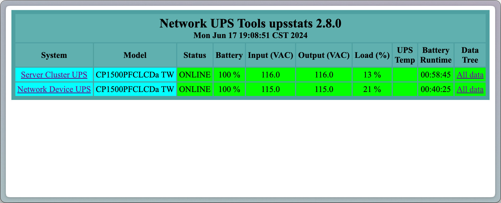
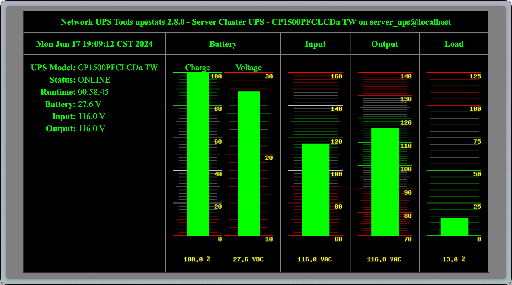

內文大多來自 使用樹莓派監測控管UPS設備／Network UPS Tools／Linux [2023年最新] - Kyle’s Blog (KodeLab)，該文章寫的非常好，請大家至原文閱讀，以下為整理的筆記
NUT 以及他的好朋友們
NUT 元件
| 元件 | 說明 |
|---|---|
| nut-driver | 與 UPS 溝通的驅動程式 |
| nut-server | 能透過 nut-driver 獲得資訊後傳遞給 client |
| nut-client (nut-monitor) | 能連上 nut-server 獲取 UPS 資訊，然後控制本機關機等操作 |
| nut-cgi | 簡易的網頁介面，顯示 UPS 狀態 |
NUT 指令
| 指令 | 說明 |
|---|---|
| upsd | NUT Server 的 deamon |
| upsdrvctl | NUT Server 上的 UPS 驅動程式 |
| upsc | 簡易版的 UPS Client，可以快速連上本地或網路上的 NUT Server 查看 UPS 狀態 |
| upsmon | 監看 UPS 與關機控制的程式 |
| upscmd | 對 UPS 下達指令，例如開始電池測試、關閉蜂鳴器…等 |
| upslog | 查看 UPS 狀態紀錄 |
NUT 設定檔
| 設定檔 | 說明 |
|---|---|
| nut.conf | NUT 運作模式等基本設定 |
| ups.conf | NUT 的 UPS Driver 要連線的 UPS 的設定 |
| upsd.conf | NUT 的 UPS Daemon 的設定 |
| upsd.users | nut-server 使用者的帳密 |
| upsmon.conf | nut-monitor 的設定 |
| upssched.conf | NUT 排程 |
| hosts.conf | NUT CGI Server 要監控的端點 |
設定 NUT Server
筆者安裝的環境是 Raspberry Pi 3B+，UPS 型號是
CP1500PFCLCDa TW，搭配串接另一台 Synology NAS UPS Server
安裝 NUT UPS Server
# 安裝 nut 後會一併安裝 nut-server 跟 nut-client 等程式。
$ sudo apt install -y nut
# 或是 Fedora 系列的
$ sudo dnf install -y nut抓取連線的 UPS
將 UPS 的 USB 連接線插入電腦中
$ lsusb
# Bus 001 Device 005: ID 0764:0601 Cyber Power System, Inc. PR1500LCDRT2U UPS
# Bus 001 Device 004: ID 0424:7800 Microchip Technology, Inc. (formerly SMSC)
# Bus 001 Device 003: ID 0424:2514 Microchip Technology, Inc. (formerly SMSC) USB 2.0 Hub
# Bus 001 Device 002: ID 0424:2514 Microchip Technology, Inc. (formerly SMSC) USB 2.0 Hub
# Bus 001 Device 001: ID 1d6b:0002 Linux Foundation 2.0 root hub
$ sudo nut-scanner -U
# Scanning USB bus.
# [nutdev1]
# driver = "usbhid-ups"
# port = "auto"
# vendorid = "0764"
# productid = "0601"
# product = "CP1500PFCLCDa TW"
# serial = "CXXXX2000111"
# vendor = "CPS"
# bus = "001"設定 UPS 連線
sudo nano /etc/nut/ups.conf，將設定加入到檔案末
[server_ups]
driver = usbhid-ups
port = auto
vendorid = 0764
productid = 0601
pollinterval = 5
desc = "Server Cluster UPS"
serial = CXXXX2000111- 行
1：UPS 的名字，可以自己取 - 行
2-5、8：依照前步驟sudo nut-scanner -U顯示的內容填入 - 行
6：可不填入，範例的意思是每五秒拉一次訊息 - 行
7：UPS 的描述，內容可自行填入
完成後，執行 sudo upsdrvctl restart 重啟驅動
設定 NUT 模式
sudo nano /etc/nut/nut.conf，將 none 改為 netserver
MODE=netserverMODE 還有：單機模式 standalone、僅連線 ups server 的 netclient
完成後執行 sudo systemctl restart nut-server 重啟服務
設定 NUT 網路
sudo nano /etc/nut/upsd.conf，將設定加入到檔案末
LISTEN 0.0.0.0 34933493 是預設 port，0.0.0.0 代表允許任何 IP 連入，若要增加安全性可以稍作修改
設定 NUT 帳號
sudo nano /etc/nut/upsd.users，將設定加入到檔案末
[admin]
password = your_admin_password
actions = SET
instcmds = ALL
[upsmon]
password = your_password
upsmon primary- 行
1：admin 可以改成自己喜歡的帳號名，這個是使用upscmd控制 UPS 的時候會使用到的帳號 - 行
6：upsmon 是給 nut-monitor 使用的帳號 - 行
8：電源不足時，secondary會先關機，primary後作動，因為他是最主要的系統。舊版本可能稱為master、slave
完成後執行 sudo systemctl restart nut-server 重啟服務
設定 NUT CGI Server
因為筆者使用 Raspberry Pi 跑 NUT，不想要浪費寶貴的計算資源，決定使用 nut-cgi 和 cgi 用的網頁伺服器 lighttpd
$ sudo apt install nut-cgi lighttpdsudo nano /etc/nut/hosts.conf，將設定加入到檔案末
MONITOR server_ups@localhost "Server Cluster UPS"
MONITOR ups@192.168.1.1 "Network Device UPS"- 行
2：筆者有另一台 UPS 接在 Synology NAS 上，故填入兩行
設定完成後可以讓 cgi server 跑起來
$ sudo lighttpd-enable-mod cgi
$ sudo service lighttpd force-reload這時候進入 http://your_ip/cgi-bin/nut/upsstats.cgi 就能看到簡潔有利的畫面了  
不喜歡那麼簡陋畫面的話，還有 Brandawg93/PeaNUT、rshipp/webNUT、BeardedTek-com/nutui 可以選擇
使用 NUT
查看 UPS 狀態
使用 upsc 即可查看狀態，upsc ups_name@host。Ex: upsc server_ups@localhost
UPS 資訊
| 名稱 | 說明 | 數值範例 |
|---|---|---|
| battery.charge | 目前電池電量（%） | 100 |
| battery.charge.warning | 電池低電量警告閾值（%） | 20 |
| battery.charge.low | 電池低電量保護閾值（%） | 10 |
| battery.runtime | 預估電池剩餘供電時間（秒） | 3525 |
| battery.type | 電池類型 | PbAcid |
| battery.voltage | 電池電壓 | 27.6 |
| battery.voltage.nominal | 標準電壓值 | 24 |
| device.type | 設備類型（NUT 可以檢測 UPS 以外的一些電源設備） | ups |
| driver.name | 驅動名稱 | usbhid-ups |
| driver.parameter.port | 與 UPS 的通訊埠 | auto |
| driver.version | 驅動版本 | 2.7.4 |
| input.frequency | 輸入的交流電頻率 | 60 |
| input.voltage | 輸入到 UPS 的電壓（V） | 115.0 |
| input.frequency | 輸入到 UPS 的交流電頻率 | |
| input.transfer.high | 電壓上限，超過時會啟動穩壓保護 | 136 |
| input.transfer.low | 電壓下限，低於時會啟動穩壓保護 | 88 |
| output.voltage | 目前輸出給用電設備的電壓 | 115.0 |
| ups.mfr | UPS 製造商 | CPS |
| ups.model | UPS 型號 | CP1500PFCLCD |
| ups.vendorid | UPS 製造商 ID | 0764 |
| ups.productid | UPS 型號 ID | 0501 |
| ups.load | UPS 負載 (%) | 10 |
| ups.temperature | UPS 溫度 | |
| ups.status | UPS 狀態，常見有 OL（正常）、OB（使用電池）、OB（低電量）、RB（電池測試）、CHRG（電池充電） | OL |
| ups.beeper.status | UPS 蜂鳴器是否啟動 | enabled |
| ups.test.result | UPS 自我測試結果：No test initiated、In progress、Aborted、Done and passed…等 | Done and passed |
控制 UPS
使用 upscmd 即可控制 UPS，下 -l 可以看自己能對 UPS 做什麼事，ex: upscmd -u admin -p password -l ups@localhost
帳號是稍早寫在 /etc/nut/upsd.users 中的， 若是連線到 Synology NAS 的 UPS，帳號密碼分別是 monuser 和 secret
關閉 UPS 蜂鳴器的範例：upscmd -u monuser -p secret ups@nas.ip beeper.disable
UPS 日誌
upslog 可以用來查看 ups 日誌
$ sudo upslog -s server_ups -i 5 -l -
# Network UPS Tools upslog 2.8.0
# logging status of server_ups to - (5s intervals)
# Init SSL without certificate database
# 20240617 215506 100 117.0 13 [OL] NA NA
# 20240617 215511 100 117.0 13 [OL] NA NA
# 20240617 215513 100 117.0 13 [OL] NA NA-i 5：每五秒一次-l -：輸出到 STDOUT- 輸出格式：
yyyyMMdd HHmmss 電池電量 輸入電壓 負載(%) [供電狀態] UPS溫度 輸入頻率
設定 NUT Client
這裡 client 指的是遠端機器，跟上方 NUT Server 不同台
安裝 NUT Client
$ sudo apt install -y nut-client設定 NUT 模式
sudo nano /etc/nut/nut.conf，將 none 改為 netclient
MODE=netclient確認連線正常
先使用 upsc 連線看看，確認中間通訊沒有被防火牆擋住
$ upsc server_ups@192.168.1.2
# Init SSL without certificate database
# battery.charge: 100
# battery.charge.low: 10
# battery.charge.warning: 20
# battery.mfr.date: CPS
# battery.runtime: 3525
# .......(略)設定 NUT 監控的機器
sudo nano /etc/nut/upsmon.conf，將設定加入到檔案末
MONITOR server_ups@192.168.1.2 1 upsmon your_password secondary- 將
upsmon以及your_password改成您的帳號及密碼，該值是在upsd.users中設定的 - 語法解釋：
MONITOR <system> <powervalue> <username> <password> ("primary"|"secondary")<system>：語法是<upsname>@<hostname>[:<port>]<powervalue>：通常為1primary代表會最後關機，因為他是最主要的系統，會先讓secondary先關機
- 還有很多設定，
upsmon.conf中的註解寫的非常清楚SHUTDOWNCMD：關機要執行的指令NOTIFYCMD：發生事件要執行的指令NOTIFYFLAG：發生什麼事件要做什麼事情，語法：NOTIFYFLAG <notify type> <flag>[+<flag>][+<flag>] ...<notify type>ONLINE：UPS 在線上，即市電恢復時會觸發ONBATT：UPS 使用電池供電，即市電中斷時會觸發LOWBATT：UPS 低電量時會觸發FSD：UPS 正在被關閉 (Forced Shutdown)COMMOK：與 nut-server 成功建立連接時觸發COMMBAD：與 nut-server 建立連接失敗（或斷線）時觸發SHUTDOWN：UPS 發出關機指令觸發REPLBATT：UPS 需要更換電池時觸發NOCOMM：無法與 UPS 建立連接 (UPS未就緒) 時觸發
<flag>SYSLOG：只在 syslog 中紀錄WALL：在終端上提示 (/bin/wall)EXEC：執行NOTIFYCMD指定的命令，並傳遞相關事件IGNORE：忽略該事件
設定完成後重啟服務 upsmon -c reload，並且可以用 ps 查看服務是否正常執行
$ upsmon -c reload
$ ps -ef | grep upsmon
# root 1143160 1 0 11:22 ? 00:00:00 /lib/nut/upsmon start
# nut 1143161 1143160 0 11:22 ? 00:00:02 /lib/nut/upsmon start
# root 1250473 1242800 0 22:00 pts/0 00:00:00 grep upsmon